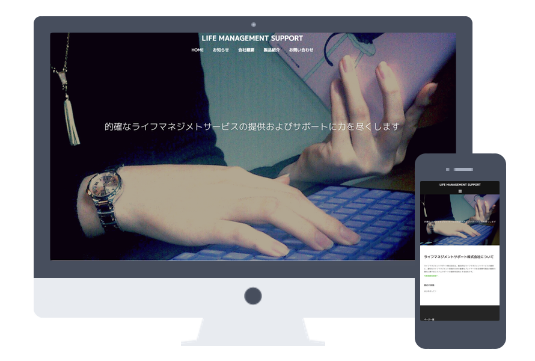

Works
これまでの制作物についてご紹介します。実績
お客さまよりご依頼をいただき制作したものについて、ご紹介します。
-

ライフマネジメントサポート
株式会社様ライフマネジメントサポート株式会社様のホームページを作成しました。サイト自体はWordPressを用いて構築し、アコーディオンなどの一部デザインをjQuery等を使用し制作しました。
趣味
私の趣味および学習のために制作したものについて、ご紹介します。
-

-

After Works ver.2.0
ポートフォリオ用Webサイトを改修したものです。0からレスポンシブの機能を実装し、PC・SP表示のデザインを制作しました。また、jQueryを用いてSP表示時のメニューやアコーディオンの動作を実装しました。
-

instaAW
INSTAGRAMから画像情報を取得し、表示させるWebサイトを制作しました。また、緯度、経度情報を取得しGoogleMapとして表示させる機能や、画像のリストの高さを常に等幅に保つ処理をJavaScriptで実装しました。
※INSTAGRAMから画像情報を取得する部分の処理については「Fly higher! Sky is the limit!」様のHPを参考にしました。 -

-